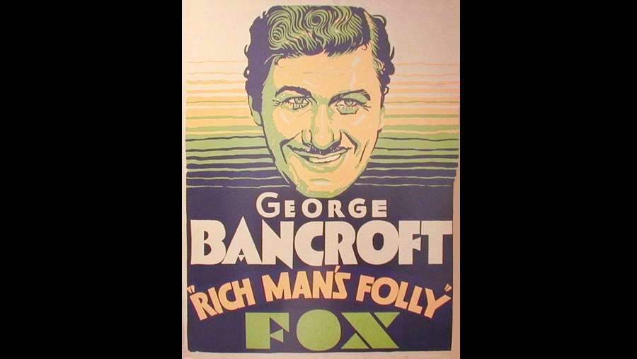

1931

CAST
Brock Trumbull
-
George Bancroft
Anne Trumbull
-
Frances Dee
Joe Warren
-
Robert Ames
Paula Norcross
-
Juliette Compton
Brock Junior
-
David Durand
Katherine Trumbull
-
Dorothy Peterson
McWylie
-
Harry Allen
Kincaid
-
Gilbert Emery
Dayton
-
Guy Oliver
Anne, as a child
-
Anne Shirley
Marston
-
George MacFarlane
CREATIVE TEAM
Director
-
John Cromwell
Screenplay
-
Edward E. Paramore Jr. / Grover Jones
PRODUCTION
Released on 14 November 1931, by Paramount Pictures, this modern adaptation of Dombey and Son is regarded as Hollywood's first major screen adaptation of a Charles Dickens work.